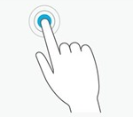
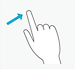
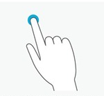
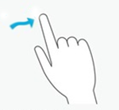
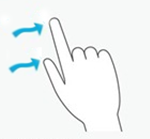
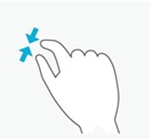
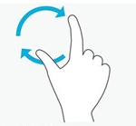

Gestures
Warning
Приносим свои извинения за неудобства. Для этой страницы нет перевода на русский язык. Она будет отображаться на английском языке.
Intermediate Programmer
Gestures are predefined pointer patterns. Stride can recognize gestures and trigger corresponding events. For example, in a strategy game, the player can drag and drop a unit to the battlefield with a drag gesture. Gestures can use one or several fingers.
Note
All lengths, speeds and error margins of configuration files must use normalized values.
Turn on gesture recognition
By default, the input system doesn't recognize gestures, as this requires CPU time.
To turn on gesture recognition:
- Create an instance of the configuration class for the gesture you want to recognize. For example, for the drag gesture, create an instance of GestureConfigDrag.
- Configure the class parameters.
- Add the gesture configuration to the Gestures collection.
Warning
After you activate recognition for a gesture, you can't modify the gesture's parameters. If you need to do this, delete the gesture from the Gestures collection and create a new entry with new parameters.
Turn off gesture recognition
Delete the gesture from the InputManager.Gestures collection.
Gesture recognition
When the input system detects a gesture, it adds a GestureEvent to the list of InputManager.GestureEvents. The event contains information about the gesture and its state, such as its location and the number of fingers used.
Note
Each gesture has its own associated gesture event class (see below).
The GestureEvent.Type field indicates which gesture has been recognized. You can then cast the base gesture event into the gesture-specific event type to have gesture-type-specific information about the event.
Stride can detect several gestures simultaneously, so the event list can contain more than one item in an update.
The list is cleared with every update, so you don't need to clear it manually.
Configure gestures
In the GestureConfig classes, you can configure parameters including:
the number of fingers the gesture uses
the number and duration of taps the gesture uses
the gesture direction
Note
Each gesture has its own configuration class with specific configuration parameters (see below).
Types of gesture
Stride supports two main types of gesture:
Discrete gestures (tap, flick, long press) trigger a single event.
Continuous gestures (drag and composite) trigger a series of events when the user changes the direction of the gesture.
Discrete gestures
Tap

The user touches the screen and quickly removes their finger.
Configuration class: GestureConfigTap
Event class: GestureEventTap
The number of fingers on the screen can't vary during the gesture. To set the number of fingers required for a tap, modify RequiredNumberOfFingers.
Tip
To distinguish single taps from multi-taps, the system uses latency in tap events. To disable this, set the GestureConfigTap.MaximumTimeBetweenTaps field to 0.
Flick

The user touches the screen, performs a quick straight translation, and withdraws their finger(s).
Configuration class: GestureConfigFlick
Event class: GestureEventFlick
The number of fingers on the screen can't during the gesture.
To set a minimum length for the flick gesture, use GestureConfigFlick.MinimumFlickLength.
To restrict the direction of the flick to vertical or horizontal, use GestureConfigFlick.FlickShape.
Long press

The user touches the screen and maintains pressure without removing their finger for a certain period of time (the default time is one second).
Configuration class: GestureConfigLongPress
Event class: GestureEventLongPress
The number of fingers on the screen can't vary during the gesture.
To change the minimum press length for the long press gesture, modify GestureConfigLongPress.RequiredPressTime.
Continuous gestures
Drag

The user touches the screen, performs a translation, and withdraws their finger(s).
Configuration class: GestureConfigDrag
Event class: GestureEventDrag
The number of fingers on the screen can't vary during the gesture.
To detect smaller drags, decrease GestureConfigDrag.MinimumDragDistance.
To restrict the direction of the drag to vertical or horizontal, use GestureConfigDrag.DragShape.
Composite
  
The user touches the screen with two fingers and moves them independently.
Configuration class: GestureConfigComposite
Event class: GestureEventComposite
The composite gesture requires exactly two fingers on the screen. It's triggered when the system detects one of the three basic actions:
- Translation: the user translates two fingers together in the same direction.
- Scale: the user moves two fingers closer together or further apart.
- Rotation: the user rotates two fingers around a center point.
Gesture states
A gesture always has one of four states:
Began
Changed
Ended
Occurred
Discrete gestures (tap, flick, long press) always have the state occurred. Continuous gestures (drag and composite) always begin with the state began, followed by any changed states, and end with the ended state.
To query the current state of a gesture, use the GestureEvent.State field of the triggered gesture event.
Example code
Activate or deactivate gesture recognition
To create the configuration of a gesture you want to recognize:
// Create the configuration of a gesture you want to recognize.
var singleTapConfig = new GestureConfigTap();
// Start tap gesture recognition.
Input.Gestures.Add(singleTapConfig);
// Create the configuration of the gesture you want to recognize.
var doubleTapConfig = new GestureConfigTap(2, 1);
// Start double tap gesture recognition.
Input.Gestures.Add(doubleTapConfig);
// Stop tap gesture recognition.
Input.Gestures.Remove(singleTapConfig);
// Stop all gesture recognitions.
Input.Gestures.Clear();
Configure the gesture
Each configuration class has a parameterless constructor that corresponds to the default gesture configuration. You can use special constructors for frequently-modified parameters.
Warning
We don't recommend you modify other fields as this might break the input system. But if you need to, you can modify them using the corresponding properties.
// Default gesture config.
var singleTapConfig = new GestureConfigTap();
// Personalize gesture config using the dedicated constructor.
var doubleTapConfig = new GestureConfigTap(2, 2);
// Personalize gesture config by directly accessing the desired property.
// Make sure you know what you're doing! Modifying this might break the input system.
var noLatencyTap = new GestureConfigTap() { MaximumTimeBetweenTaps= TimeSpan.Zero };
Access gesture events
You can access the list of events triggered by recognized gestures using the InputManager.GestureEvents collection. The collection is automatically cleared at every update.
var currentFrameGestureEvents = Input.GestureEvents;
Identify the gesture type
Use the GestureEvent.Type field to identity the gesture type, then cast it to the appropriate event type to get extra information about the event.
foreach( var gestureEvent in Input.GestureEvents)
{
// Determine if the event is from a tap gesture
if (gestureEvent.Type != GestureType.Tap)
continue;
// Cast a specific tap event class.
GestureEventTap tapEvent = (GestureEventTap) gestureEvent;
// Access tap-event-specific field.
log.Info("Tap position: {0}.", tapEvent.TapPosition);
}
Identify the gesture state
Use the GestureEvent.State field to get gesture event state.
switch(compositeGestureEvent.State)
{
case GestureState.Began:
image.ComputePreview();
break;
case GestureState.Changed:
image.TransformPreview(compositeGestureEvent.TotalScale, compositionGestureEvent.TotalRotation);
break;
case GestureState.Ended:
image.TransformRealImage(compositeGestureEvent.TotalScale, compositionGestureEvent.TotalRotation);
break;
default:
break;
}